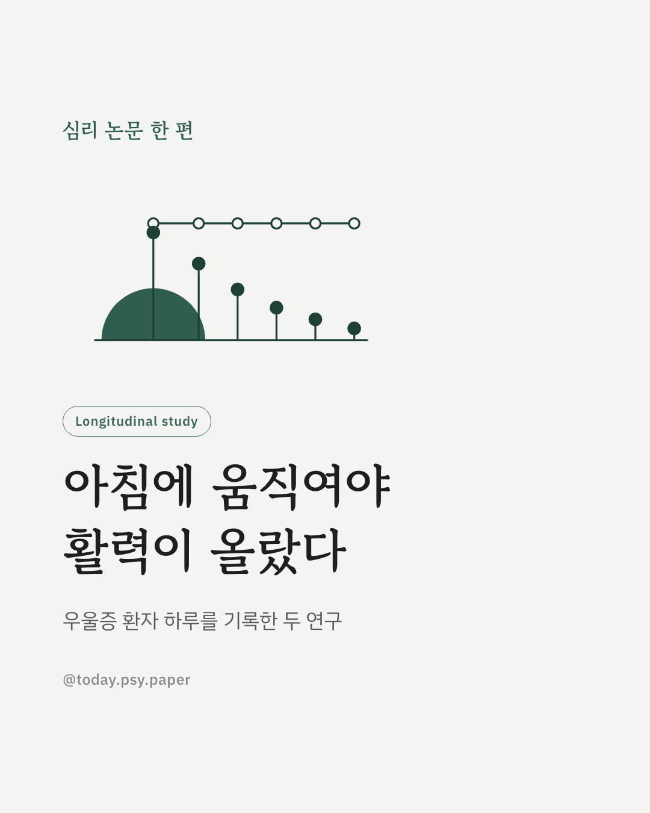
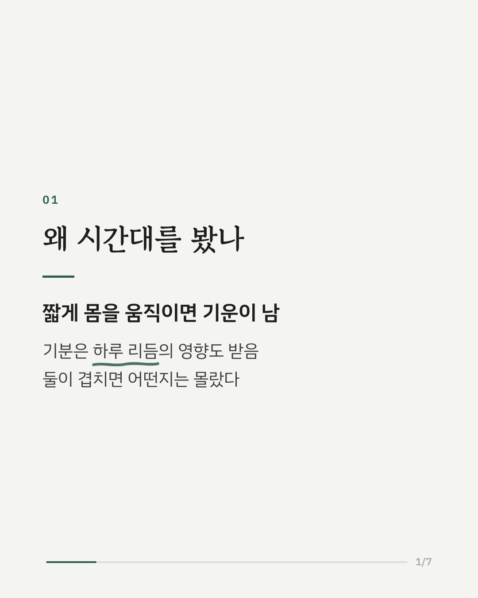
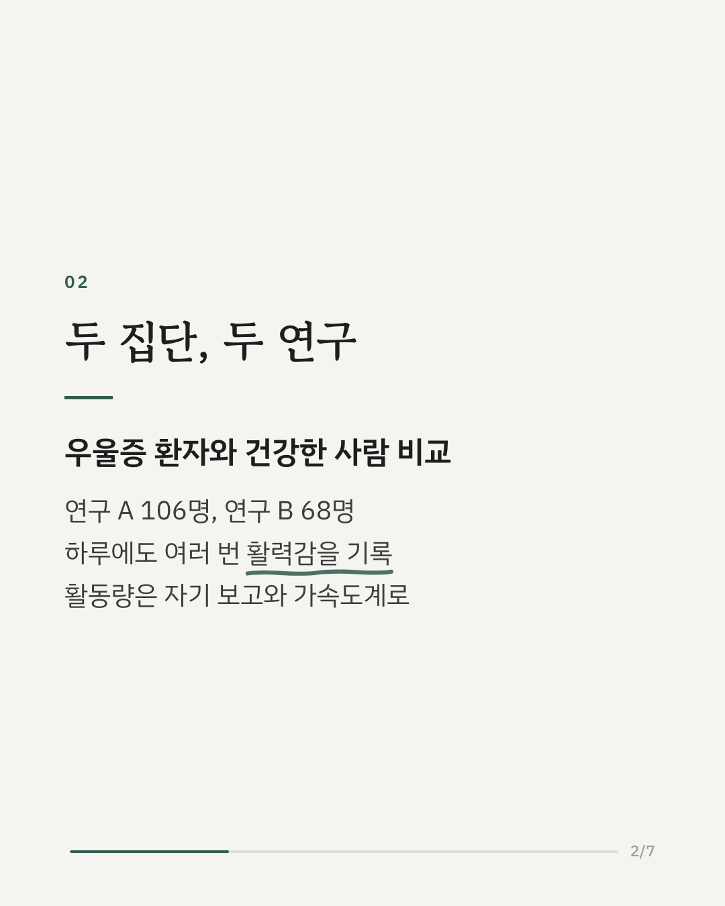
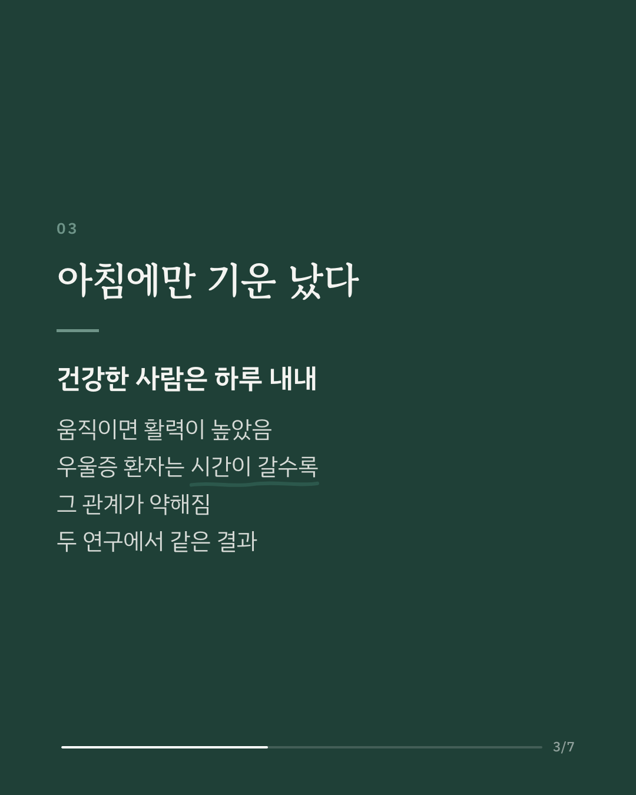
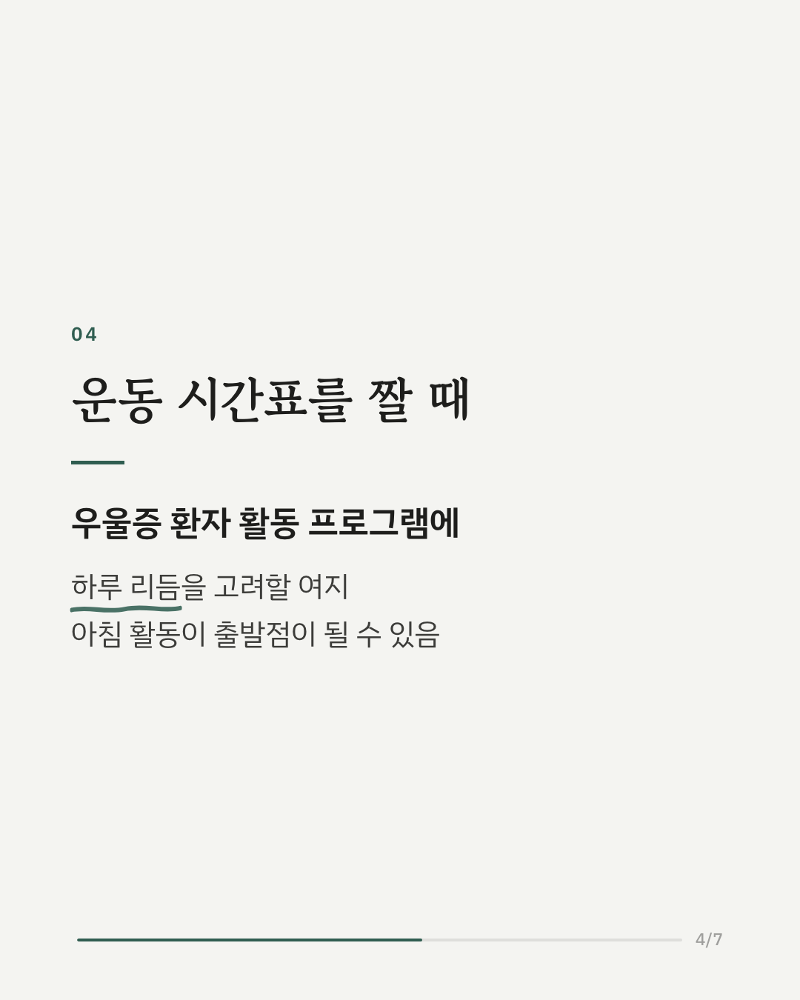
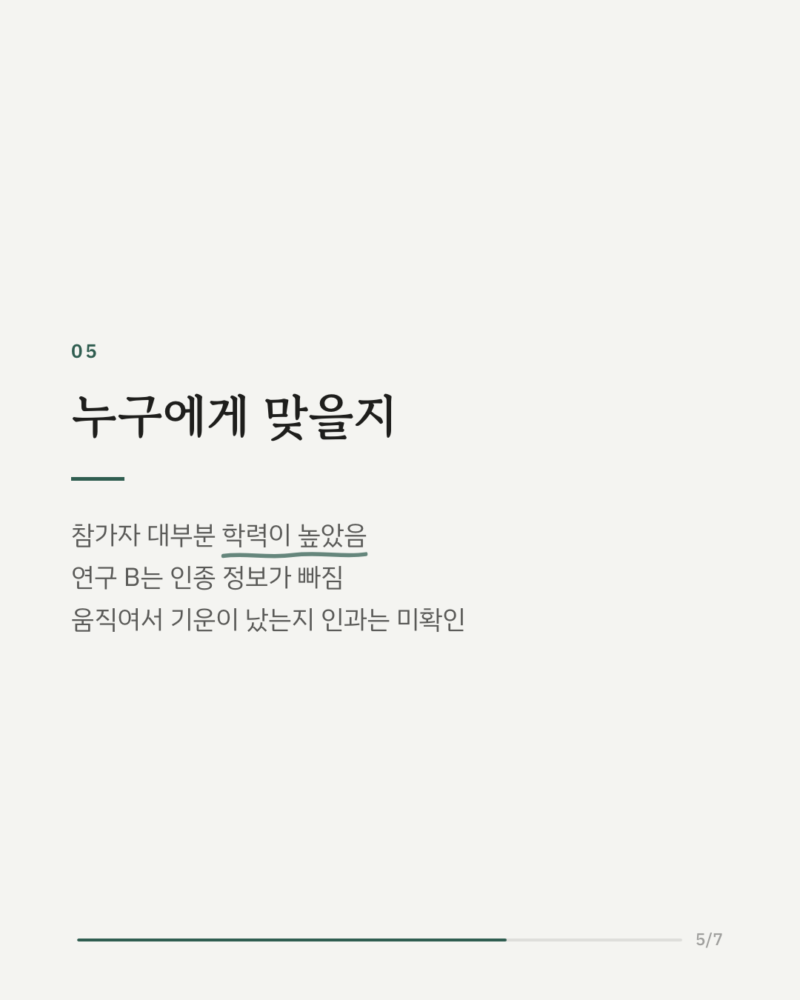
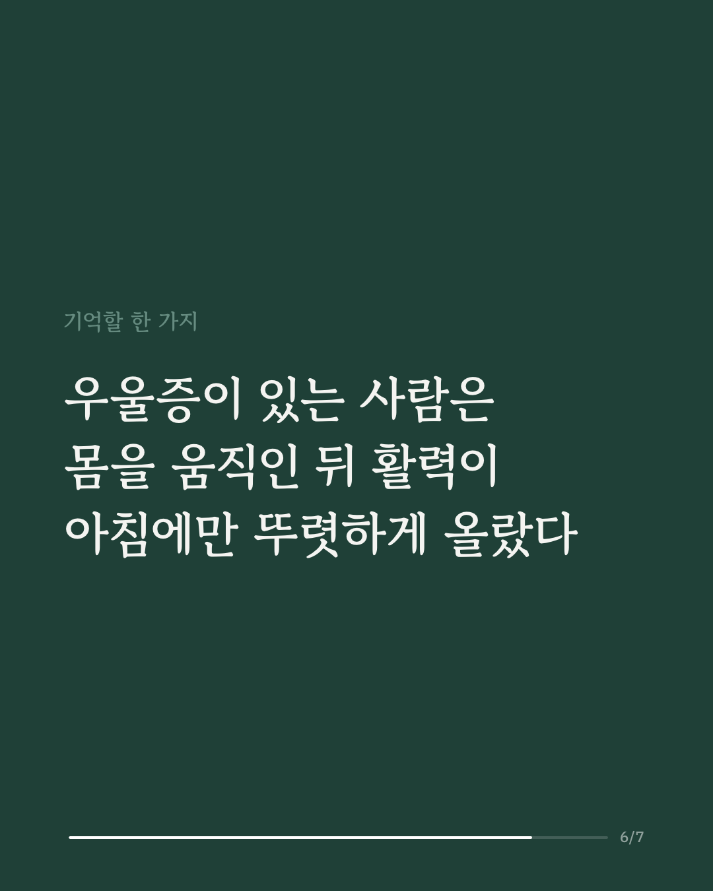
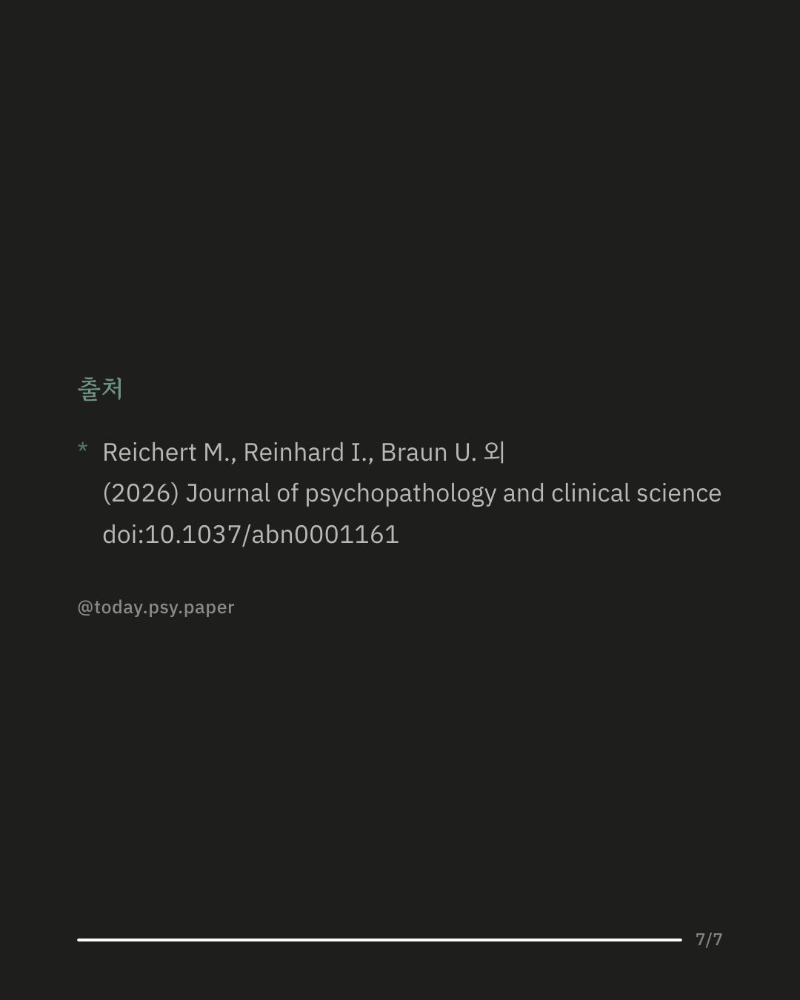

몸을 짧게 움직이면 기운이 나고 기분이 좋아진다는 연구는 많습니다. 그런데 우울증이 있는 사람에게도 이 효과가 하루 중 언제나 같을까요? 기분은 하루 리듬의 영향을 크게 받지만, 운동이나 신체 활동과 활력의 관계가 시간대에 따라 달라지는지는 알려지지 않았습니다. 연구진은 두 개의 독립 표본(106명, 68명)에서 우울증이 있는 사람과 건강한 사람의 일상을 기록했습니다. 참가자들은 하루에도 여러 번 자신이 느끼는 활력을 보고했고, 활동량은 연구 A에서는 스스로 평가하고 연구 B에서는 가속도계로 측정했습니다. 두 연구 모두에서 건강한 사람은 하루 내내 몸을 움직인 만큼 활력도 높았습니다. 반면 우울증이 있는 사람은 이 관계가 하루가 지날수록 약해져, 아침에만 움직인 뒤 기운이 더 났습니다. 연구진은 우울증을 위한 신체 활동 프로그램에서 하루 리듬을 고려하는 출발점이 될 수 있다고 봅니다. 다만 참가자 대부분의 학력이 높았고 연구 B에는 인종 정보가 없어, 다른 집단에도 그대로 적용될지는 더 확인이 필요합니다. 출처: Journal of Psychopathology and Clinical Science (2026), 'Time of day affects the relation between physical activity and feeling energetic in depression: Two real-life studies.' DOI: 10.1037/abn0001161 #임상심리 #정신건강정보 #심리학연구 #논문리뷰 #우울증 #신체활동 #일주기리듬 #활력
python3 publish.py 42734978